<meta charset="utf-8">
<title>프라하 2박 3일 실제 동선 50시간 — 나의 투자 그리고 행복한 여행</title>
<meta name="description" content="프라하 2박 3일 여행 코스를 사진 촬영 시각으로 복원했습니다. 프라하성 4시간 45분, 카를교 야경 2시간 3분, 페트린·레트나·비셰흐라드 전망대 비교와 2026년 요금까지.">
<meta name="viewport" content="width=device-width, initial-scale=1">
<link rel="canonical" href="https://danielmoon82.github.io/moon/posts/prague-2night3day-course-2026-09-22.html">
<link rel="preconnect" href="https://fonts.googleapis.com">
<link rel="preconnect" href="https://fonts.gstatic.com" crossorigin>
<link rel="stylesheet" href="https://fonts.googleapis.com/css2?family=Hahmlet:wght@400;600;800&family=IBM+Plex+Mono:wght@400;500&family=IBM+Plex+Sans+KR:wght@300;400;500;600&display=swap">

<style>
  :root{
    --paper:#F2EEE6;--surface:#FAF8F3;--surface-2:#E7E1D5;
    --ink:#191510;--ink-2:#4A4235;--ink-3:#7D7364;
    --line:#D6CEBF;--line-soft:#E4DDD0;--accent:#B06A15;--accent-bright:#C2761A;
    --up:#E5484D;--down:#3B82F6;
    --f-display:"Hahmlet",'Nanum Myeongjo',"Apple SD Gothic Neo",serif;
    --f-body:"IBM Plex Sans KR","Apple SD Gothic Neo","Malgun Gothic",sans-serif;
    --f-mono:"IBM Plex Mono","SFMono-Regular",Consolas,monospace;
    --pad:clamp(20px,5vw,64px);
  }
  @media (prefers-color-scheme:dark){
    :root:not([data-theme="light"]){
      --paper:#0B1120;--surface:#121A2C;--surface-2:#1A2439;
      --ink:#E9EEF7;--ink-2:#A9B5C9;--ink-3:#72809A;
      --line:#26314A;--line-soft:#1D2739;--accent:#E8A33D;--accent-bright:#F0B45C;
    }
  }
  *{box-sizing:border-box;}
  body{margin:0;background:var(--paper);color:var(--ink);font-family:var(--f-body);
    font-weight:300;font-size:1rem;line-height:1.75;-webkit-font-smoothing:antialiased;}
  a{color:inherit;}
  img{max-width:100%;height:auto;}
  .wrap{max-width:760px;margin:0 auto;padding-inline:var(--pad);}
  .nav{position:sticky;top:0;z-index:20;background:color-mix(in srgb,var(--paper) 88%,transparent);
    backdrop-filter:saturate(180%) blur(12px);border-bottom:1px solid var(--line);}
  .nav-in{display:flex;align-items:center;justify-content:space-between;height:58px;}
  .brand{font-family:var(--f-display);font-weight:600;font-size:1rem;letter-spacing:-.02em;text-decoration:none;}
  .back{font-family:var(--f-mono);font-size:.72rem;color:var(--ink-3);text-decoration:none;}
  .article{padding-block:clamp(40px,7vw,72px) clamp(56px,9vw,96px);}
  .eyebrow{font-family:var(--f-mono);font-size:.68rem;letter-spacing:.16em;text-transform:uppercase;
    color:var(--accent);margin:0 0 14px;}
  h1{font-family:var(--f-display);font-weight:800;font-size:clamp(1.6rem,4.4vw,2.3rem);
    line-height:1.3;letter-spacing:-.03em;margin:0 0 16px;}
  .byline{font-family:var(--f-mono);font-size:.72rem;color:var(--ink-3);
    padding-bottom:24px;border-bottom:1px solid var(--line);margin-bottom:32px;}
  h2{font-family:var(--f-display);font-weight:600;font-size:1.25rem;letter-spacing:-.02em;margin:42px 0 14px;}
  h3{font-family:var(--f-display);font-weight:600;font-size:1.05rem;letter-spacing:-.02em;
    margin:30px 0 10px;padding-top:14px;border-top:1px solid var(--line-soft);}
  h3 .code{font-family:var(--f-mono);font-size:.7rem;font-weight:400;color:var(--ink-3);margin-left:6px;}
  p{margin:0 0 18px;color:var(--ink-2);}
  ul.checks{margin:0 0 18px;padding-left:20px;color:var(--ink-2);}
  ul.checks li{margin-bottom:8px;font-size:.94rem;}
  table{width:100%;border-collapse:collapse;font-size:.88rem;margin-bottom:8px;}
  th{font-family:var(--f-mono);font-size:.66rem;letter-spacing:.06em;text-transform:uppercase;
    color:var(--ink-3);text-align:right;padding:8px 6px;border-bottom:1px solid var(--line);}
  th:first-child{text-align:left;}
  td{padding:10px 6px;border-bottom:1px solid var(--line-soft);color:var(--ink-2);}
  td.num{font-family:var(--f-mono);text-align:right;font-variant-numeric:tabular-nums;}
  td.up{color:var(--up);} td.down{color:var(--down);}
  .scroll{overflow-x:auto;}
  figure{margin:22px 0;}
  figure img{display:block;border-radius:3px;background:var(--surface-2);}
  figcaption{margin-top:8px;font-family:var(--f-mono);font-size:.68rem;color:var(--ink-3);text-align:center;}
  .note{margin-top:34px;padding:16px 18px;border-left:3px solid var(--accent);
    background:var(--surface);border-radius:0 3px 3px 0;}
  .note p{margin:0;font-size:.85rem;color:var(--ink-3);}
  .foot{border-top:1px solid var(--line);background:var(--surface);padding-block:30px 38px;}
  .foot p{margin:0;font-size:.8rem;color:var(--ink-3);}
</style>

<nav class="nav">
  <div class="wrap nav-in">
    <a class="brand" href="../index.html">나의 투자 그리고 행복한 여행</a>
    <a class="back" href="../index.html#stocks">← 시황으로</a>
  </div>
</nav>

<main class="wrap article">
  <p class="eyebrow">Market</p>
  <h1>프라하 2박 3일 동선 기록 (2026.5.24~26) — 사진 시각 기준 타임라인</h1>
  <p class="byline">여행 · 2026-09-22 기준</p>

  <p>한 줄 요약: 국립오페라 앞 도착(5/24 13:32) → 비노흐라디 → 블타바 강변 일몰(19:36~20:02) → 카를교(20:00~22:03, 2시간 3분) → 프라하성(5/25 08:57~13:42, 4시간 45분) → 말라스트라나·캄파 → 페트린(16:20 출발, 16:47 도착·도보 27분) → 레트나(18:27~21:39) → 비셰흐라드(5/26 09:34~11:12) → 댄싱하우스 → 레논벽 → 카를교(13:02~13:08, 6분) → 구시가광장·천문시계 → 중앙역(15:57). 총 50시간 25분.</p>
  <p>시각은 모두 사진 촬영 시각(중부유럽 여름시각)입니다. 요금은 2026년 9월 22일 확인값입니다.</p>
  <p>※ 이 포스팅은 쿠팡 파트너스 활동의 일환으로, 이에 따른 일정액의 수수료를 제공받습니다.</p>
  <h2>2박 3일 타임라인 — 사진 시각 그대로</h2>
  <ul class="checks">
    <li>5/24(일) 13:32  국립오페라 앞 도착</li>
    <li>5/24 15:36  비노흐라디, 성 루드밀라 성당 (나메스티 미루)</li>
    <li>5/24 16:27  동네 셀프 세탁소</li>
    <li>5/24 18:42  강 건너편에서 프라하성과 카를교가 한 화면에</li>
    <li>5/24 19:36~20:02  블타바 강변 일몰</li>
    <li>5/24 20:00  카를교 구시가 교탑 도착 → 22:03 마지막 사진 (2시간 3분)</li>
    <li>5/25(월) 08:57  흐라드차니 도착</li>
    <li>5/25 09:51~11:09  성 비투스 대성당 내부 (1시간 18분)</li>
    <li>5/25 11:34  구왕궁 블라디슬라프 홀 / 12:53 황금소로</li>
    <li>5/25 13:42  성 문 밖 말라스트라나 → 프라하성 4시간 45분</li>
    <li>5/25 16:20 우예즈드 → 16:47 페트린 정원 (걸어서 27분)</li>
    <li>5/25 17:22~17:46  페트린 전망대·전망탑</li>
    <li>5/25 18:27~21:39  레트나 (노을부터 야경까지)</li>
    <li>5/26(화) 09:34~11:12  비셰흐라드 (1시간 38분)</li>
    <li>5/26 11:27  댄싱하우스 / 12:43 레논벽</li>
    <li>5/26 13:02~13:08  카를교 (6분)</li>
    <li>5/26 13:42  천문시계 / 13:43 구시가광장</li>
    <li>5/26 15:40 중앙역 → 15:57 3번 승강장</li>
  </ul>
  <div class="note"><p>50시간 중 걸어 다닌 시간이 압도적으로 많습니다. 프라하는 지하철보다 발로 도는 도시라는 말이 사진 시각으로도 확인됐습니다.</p></div>
  <h2>도착 — 오페라 극장 앞에서 시작했습니다</h2>
  <figure>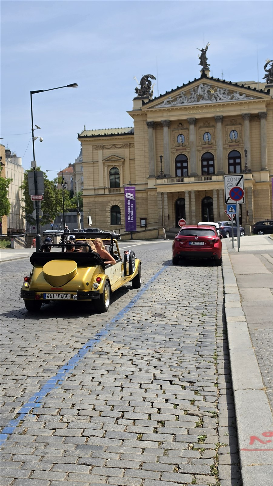<figcaption>5월 24일 오후 1시 32분. 프라하에서 찍은 첫 사진입니다. 국립오페라 건물 앞이고, 도로변에 노란 클래식카 한 대가 관광 손님을 기다리며 서 있었습니다.</figcaption></figure>
  <p>첫 사진이 오페라 극장이라는 게 저도 의외였습니다. 프라하 여행 하면 보통 구시가광장이나 카를교부터 떠올리는데, 저는 이 건물 앞에서 시작했습니다.</p>
  <p>도착 당일 오후를 관광에 쓰지는 않았습니다. 사진 기록을 보면 오후 2시 17분, 2시 34분 사진이 숙소가 있던 비노흐라디 쪽 거리고, 그 뒤 한 시간 동안 사진이 없습니다.</p>
  <figure>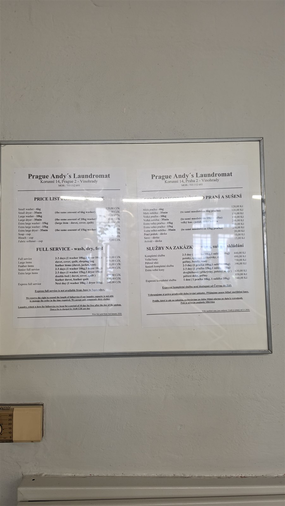<figcaption>오후 4시 27분. 비노흐라디의 셀프 세탁소 벽에 붙은 요금표입니다. 체코어와 영어가 나란히 붙어 있어서 그대로 읽을 수 있었습니다.</figcaption></figure>
  <p>도착 첫날 오후를 빨래에 썼습니다. 여행기에 넣을 만한 장면은 아닌데, 막상 장기 여행에서는 이게 제일 궁금한 정보이기도 합니다.</p>
  <p>요금표 사진에 적힌 금액을 그대로 옮기면 이렇습니다. <b>세탁 6kg 120코루나</b>, 35분 건조 120코루나, 10kg 150코루나, 15kg 250코루나입니다. 세제는 1회분 20코루나, 표백제 10코루나, 섬유유연제 15코루나.</p>
  <p>맡기는 풀서비스는 2~3일 걸리는 기본이 <b>440코루나</b>(약 28,500원), 시니어 390코루나, 대형 490코루나, 깃털 이불 750코루나, 다음날 받는 익스프레스가 540코루나였습니다. 요금표 아래에 "2026년 1월 2일부터 유효"라고 적혀 있습니다.</p>
  <p>그런데 이 요금표에만 있는 문구가 하나 있습니다. <b>익스프레스 풀서비스는 6월부터 9월까지 안 된다</b>는 줄입니다. 성수기에 급하게 맡길 생각이라면 이건 미리 알아야 합니다.</p>
  <p>한 가지 실수도 했습니다. 오후 4시 31분에 찍은 기계 사진을 저는 세탁기로 알았는데, 다시 보니 경고 라벨이 전부 건조기(dryer) 표기였습니다. HEAT TIME 35분, COOL DOWN 1분. 세탁기와 건조기가 비슷하게 생겨서 헷갈립니다.</p>
  <h2>첫날 저녁, 강변에서 카를교까지 — 여기가 이 일정의 절정이었습니다</h2>
  <figure>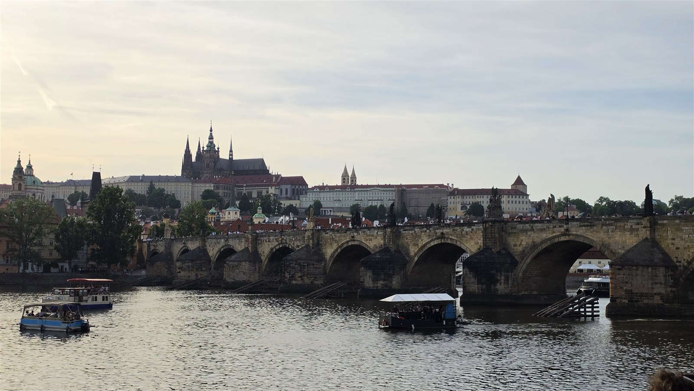<figcaption>오후 6시 42분. 강 건너편에서 프라하성과 카를교가 한 화면에 들어옵니다. 다리 아래로 유람선 두 대가 지나가고 있었습니다.</figcaption></figure>
  <p>이 사진을 찍은 자리가 프라하 여행에서 제일 값싼 전망대였다고 생각합니다. 입장료도, 계단도 없습니다. 강변 산책로에서 그냥 보입니다.</p>
  <figure>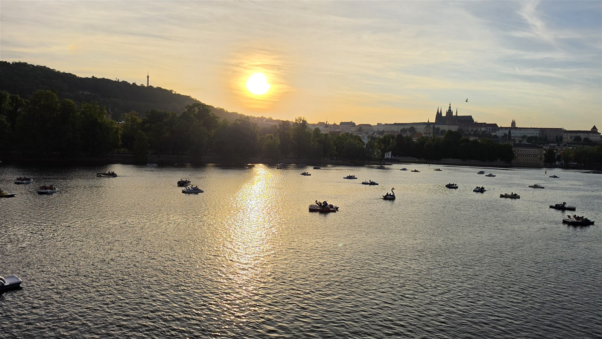<figcaption>오후 7시 49분 블타바 강변. 해가 언덕 위에 걸려 있고 강에는 오리배가 여러 대 떠 있었습니다. 왼쪽 강변 잔디에는 사람들이 앉아 있습니다.</figcaption></figure>
  <p>5월 하순 프라하는 밤 9시가 다 되어야 어두워집니다. 저녁 7시 반이 우리 기준 오후 5시 같은 밝기입니다. 이게 프라하 여행 일정에서 생각보다 큰 변수입니다.</p>
  <p>강변에서 찍은 사진이 오후 6시 58분부터 8시 2분까지 이어집니다. 한 시간을 강가에서 썼는데, 그날 일정 중 가장 안 아까운 한 시간이었습니다.</p>
  <figure>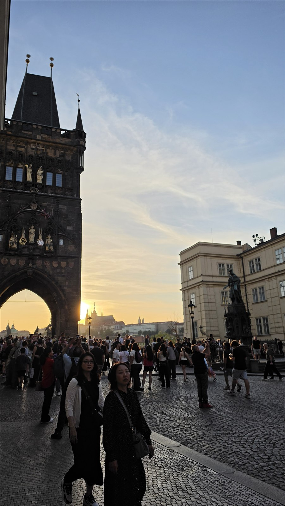<figcaption>오후 8시 0분, 카를교 구시가 쪽 교탑 앞. 사람이 꽤 많습니다. 저녁 시간인데도 다리 입구에 줄처럼 사람이 몰려 있었습니다.</figcaption></figure>
  <p>여기서부터가 카를교입니다. 사진 시각으로 저녁 8시 0분에 다리 입구에 섰고, 다리 위 마지막 사진이 밤 10시 3분입니다.</p>
  <figure>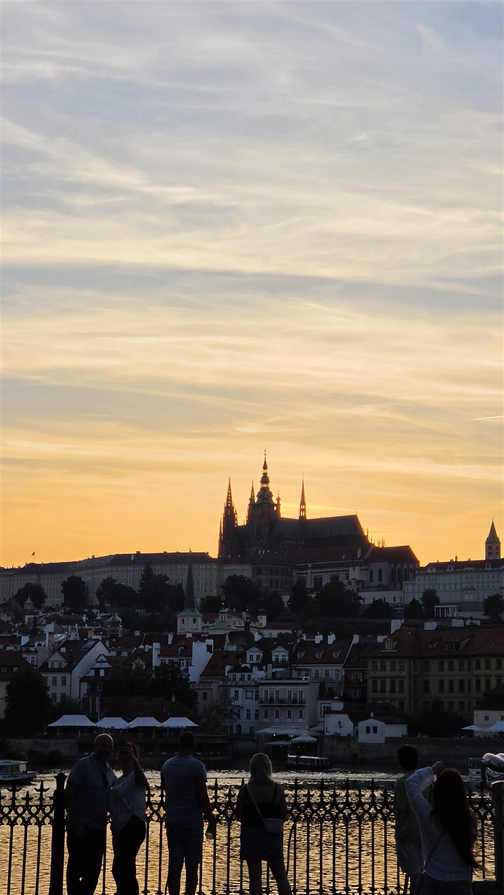<figcaption>오후 8시 23분. 노을 속 프라하성 실루엣. 지붕 선만 남고 색이 다 빠졌습니다.</figcaption></figure>
  <p>저녁 8시 반에서 9시 사이, 성 실루엣이 주황 하늘 위로 검게 뜨는 시간대가 있습니다. 사진으로 보면 20분쯤입니다. 이 시간에 다리 위에 서 있는 게 목적이라면 일정을 거꾸로 짜야 합니다.</p>
  <figure>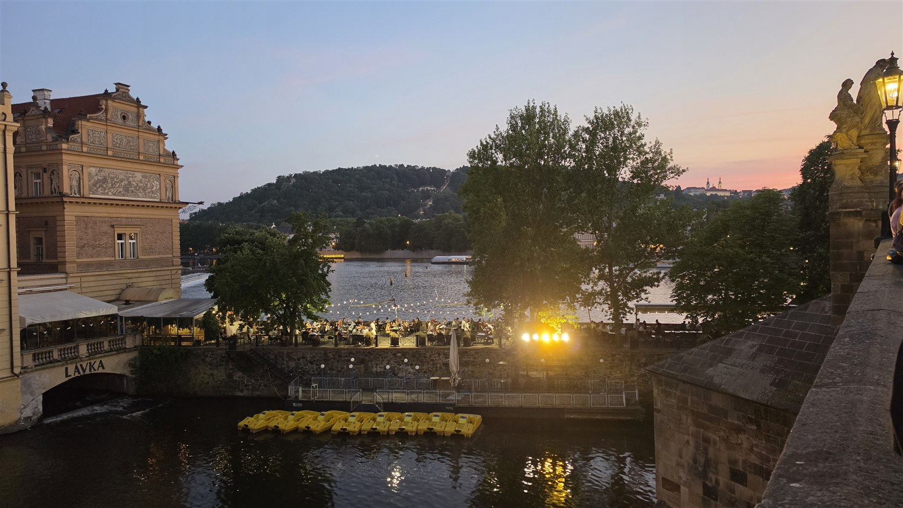<figcaption>밤 9시 19분 카를교 위에서. 하늘에 아직 분홍빛이 남아 있고 강변 건물에는 조명이 들어왔습니다. 다리 아래 노란 오리배들이 모여 있습니다.</figcaption></figure>
  <p>사진에서 확인되는 것만 적겠습니다. 오후 9시 13분 사진에는 다리 위에서 악기를 연주하는 사람이 앉아 있고, 9시 27분 사진에는 여전히 사람이 빽빽합니다. 밤 10시가 되어서야 사진에서 사람이 눈에 띄게 줄어듭니다.</p>
  <figure>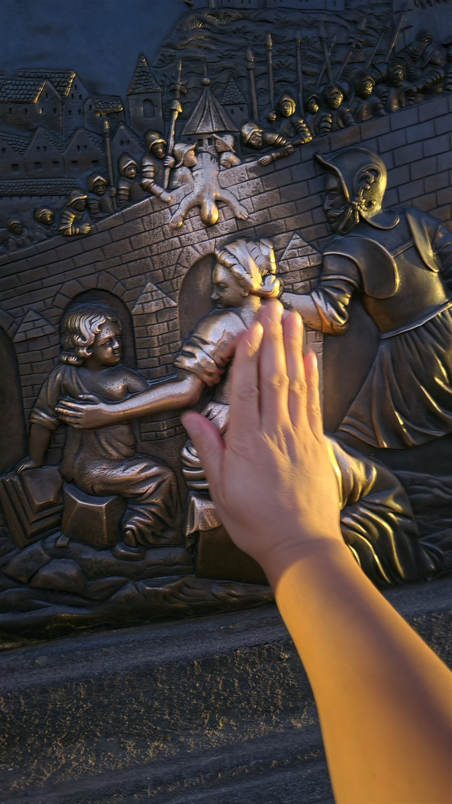<figcaption>밤 9시 29분. 성 얀 네포무츠키 성상 아래 청동 부조입니다. 손이 닿는 자리만 반질반질하게 닳아서 색이 다릅니다.</figcaption></figure>
  <p>이 부조를 만지면 다시 프라하에 온다는 이야기가 붙어 있습니다. 사진으로 확인되는 건 사람들이 어디를 만지는지입니다. 닳은 자리가 정확히 두 군데로 나뉘어 있습니다.</p>
  <figure>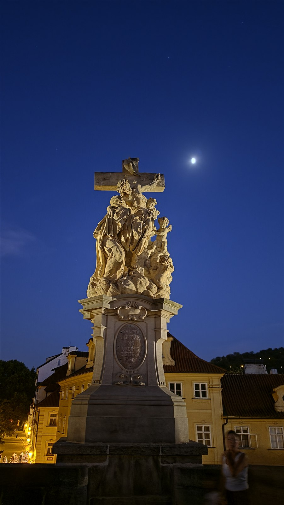<figcaption>밤 9시 55분. 조각상 위쪽에 달이 떠 있습니다. 이 시간이 되면 조명이 아래에서 올라와 성상 얼굴에 그림자가 심하게 생깁니다.</figcaption></figure>
  <p>밤 10시 3분에 다리를 떠났습니다. 들어간 시각이 8시 0분이니 <b>2시간 3분</b>입니다. 600m가 안 되는 다리에서 두 시간을 썼습니다.</p>
  <h2>프라하성 — 4시간 45분, 티켓은 450코루나였습니다</h2>
  <figure>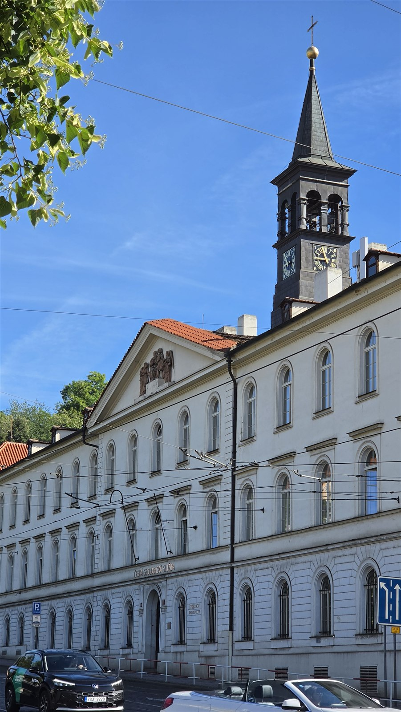<figcaption>5월 25일 오전 8시 57분 흐라드차니. 아침 하늘이 아주 맑았고 광장에 사람이 거의 없었습니다.</figcaption></figure>
  <p>둘째 날은 프라하성 하나에 오전을 통째로 걸었습니다. 결과적으로 오전이 아니라 오전과 점심이 다 들어갔습니다.</p>
  <p>오전 9시 직전에 도착한 게 잘한 선택이었습니다. 9시 30분 사진과 9시 31분 사진을 보면 제2중정에 사람이 거의 없습니다. 같은 자리에서 오후 1시에 찍은 사진과 비교하면 사람 수가 완전히 다릅니다.</p>
  <figure>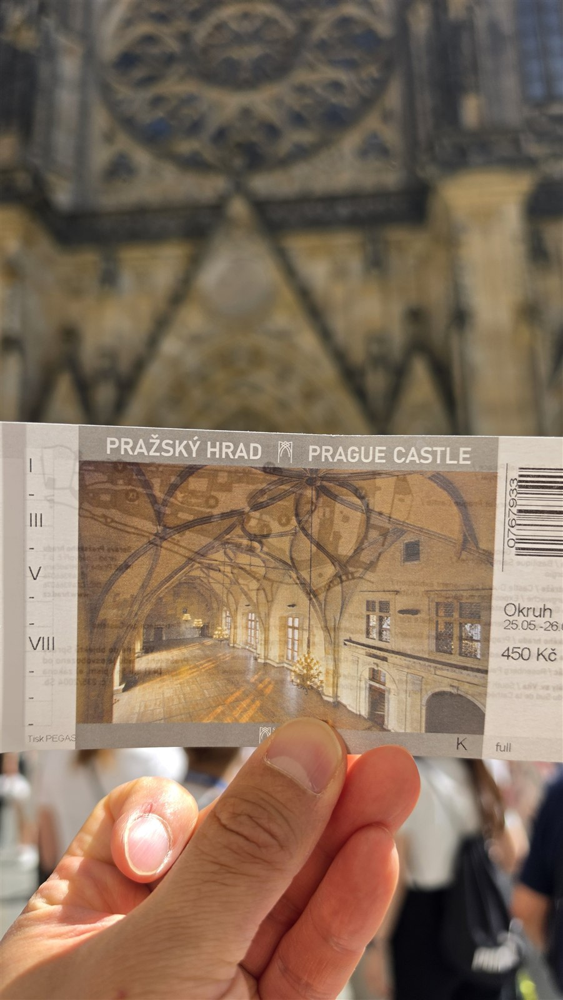<figcaption>오전 11시 9분. 티켓 실물입니다. 'PRAŽSKÝ HRAD / PRAGUE CASTLE', Okruh, 450 Kč, 유효기간 25.05.–26.05. 뒤로 성 비투스 서쪽 파사드의 장미창이 보입니다.</figcaption></figure>
  <p>티켓에 찍힌 값이 <b>450코루나</b>(약 29,200원)입니다. 2026년 9월 22일 기준으로 다시 확인해 보니 성인 450, 할인 300, 가족 950코루나로 제가 낸 값과 같습니다.</p>
  <p>유효기간이 이틀 연속으로 찍혀 있다는 게 중요합니다. 한 번에 다 못 보면 다음 날 이어서 볼 수 있습니다. 대상별로 1회 입장이라는 조건이 붙습니다.</p>
  <p>티켓 왼쪽에 로마숫자 절취선이 있습니다. 성 비투스 대성당, 구왕궁, 성 이르지 바실리카, 황금소로. 이 네 곳이 한 장에 묶여 있습니다.</p>
  <figure>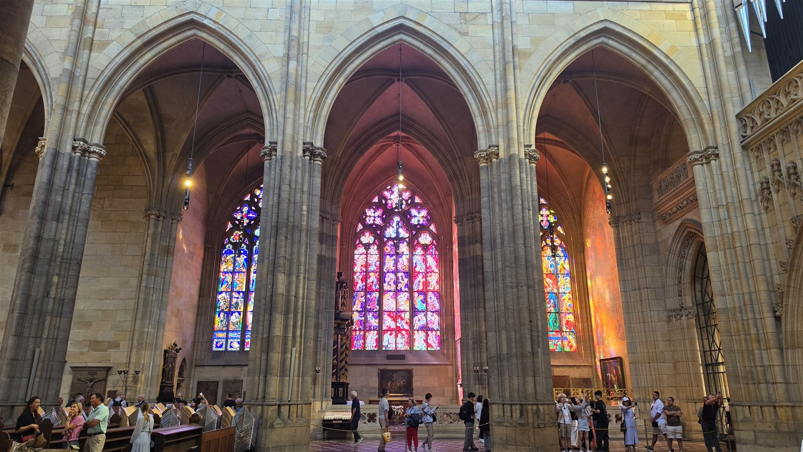<figcaption>오전 9시 51분 성 비투스 대성당 내부. 오전 빛이 남쪽 스테인드글라스를 통과해 기둥에 색을 뿌립니다. 오른쪽 아래로 관람객 줄이 보입니다.</figcaption></figure>
  <p>대성당 내부 사진이 오전 9시 51분부터 11시 9분까지 이어집니다. <b>1시간 18분</b>입니다. 안에서 이렇게 오래 머물 생각은 없었습니다.</p>
  <p>오전 10시 38분에 찍은 사진 한 장 때문에 그렇게 됐습니다. 알폰스 무하가 만든 창인데, 색이 다른 창과 확실히 다릅니다. 다른 창이 색유리를 이어 붙인 느낌이라면 이건 그림 같습니다.</p>
  <p>오전 11시 2분 사진에는 벽면 프레스코와 색유리가 한꺼번에 들어와 있습니다. 성 바츨라프 예배당 쪽입니다. 이 구역은 안으로 들어갈 수 없고 입구에서만 봅니다.</p>
  <figure>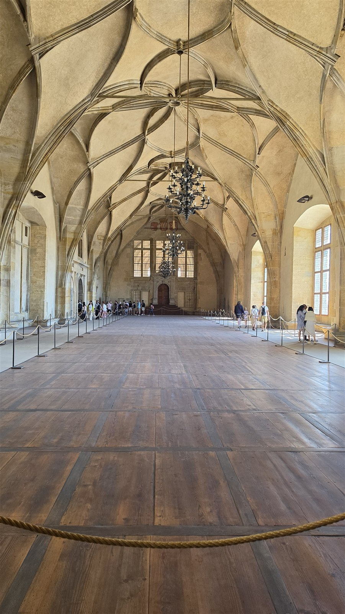<figcaption>오전 11시 34분 구왕궁 블라디슬라프 홀. 천장 늑골이 꽃처럼 갈라져 있고 바닥은 나무입니다. 이 큰 공간에 사람이 열 명 정도였습니다.</figcaption></figure>
  <p>여기가 제 기준으로 프라하성에서 가장 의외였던 곳입니다. 화려한 장식이 없어서 사진으로는 심심한데, 실제로 들어가면 천장 높이와 폭이 만드는 공기가 다릅니다. 그리고 한산합니다.</p>
  <p>오전 11시 48분부터 11시 52분까지 찍은 사진은 문장이 빽빽하게 그려진 방입니다. 체코 지방 귀족 문장이 천장과 벽을 다 덮고 있습니다. 옆방에는 초록색 타일 난로가 서 있었습니다.</p>
  <figure>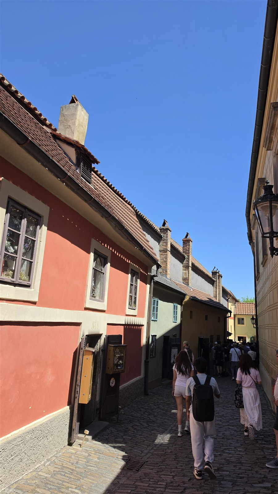<figcaption>오후 12시 53분 황금소로. 붉은색과 분홍색 작은 집들이 좁은 골목 한쪽에 붙어 있고, 앞을 사람들이 줄지어 지나갑니다.</figcaption></figure>
  <p>황금소로는 솔직히 말해 짧습니다. 골목 자체는 몇 분이면 끝납니다. 대신 집 안쪽이 전시실로 이어져 있는데, 오후 12시 41분부터 12시 47분까지 찍은 갑옷과 투구 사진이 거기서 나왔습니다.</p>
  <p>사진으로만 보면 별것 없어 보이는데, 실제로는 좁은 계단을 올라가 다락 같은 공간을 지나는 구조라 동선이 재미있습니다. 다만 사람이 많으면 앞사람 속도에 그대로 묶입니다.</p>
  <figure>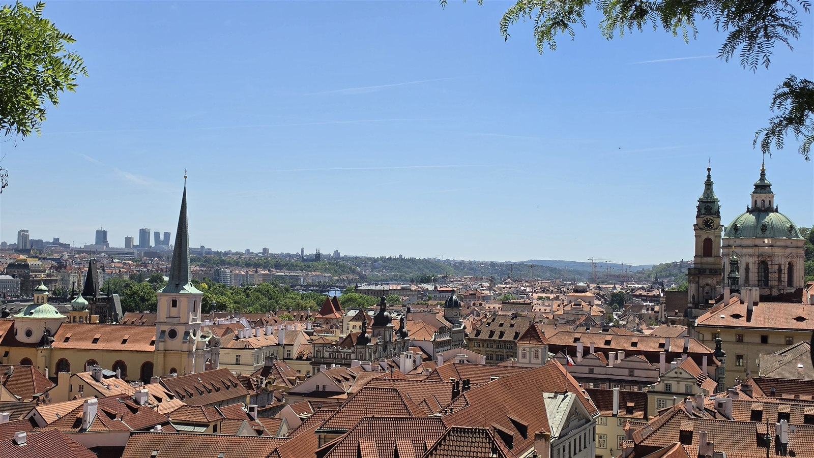<figcaption>오후 1시 17분, 성 남쪽에서 내려다본 말라스트라나. 붉은 기와가 겹겹이 깔려 있고 가운데 성 니콜라스 교회 초록 돔이 솟아 있습니다.</figcaption></figure>
  <p>성에서 나오기 전에 남쪽 정원 쪽 전망을 봤습니다. 오후 1시 3분, 1시 17분, 1시 28분 사진이 전부 여기서 나왔습니다. 따로 돈을 더 내지 않는 전망입니다.</p>
  <p>성 문을 나선 사진이 오후 1시 42분입니다. 오전 8시 57분 흐라드차니 사진부터 계산하면 <b>4시간 45분</b>입니다.</p>
  <h2>남들이 잘 안 쓰는 이야기 — 같은 카를교, 2시간 3분과 6분</h2>
  <p>이 글에서 가장 쓸모 있는 부분이 여기라고 생각합니다.</p>
  <figure>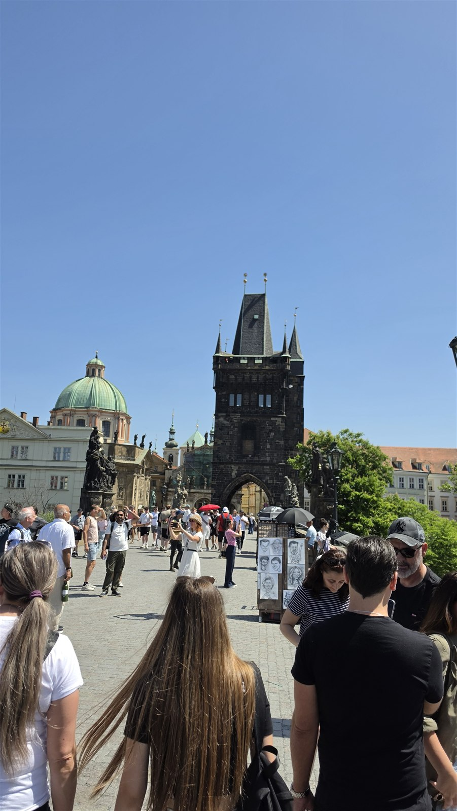<figcaption>5월 26일 오후 1시 5분 카를교. 낮에는 이렇습니다. 다리 폭 전체가 사람으로 채워져 있고, 양산과 모자를 쓴 사람이 많습니다.</figcaption></figure>
  <p>마지막 날 카를교를 다시 건넜습니다. 사진 시각이 오후 1시 2분부터 1시 8분까지. <b>6분</b>입니다.</p>
  <p>첫날 밤에는 2시간 3분을 썼습니다. 20배 차이입니다. 같은 다리에서 이렇게 갈린 이유는 사진을 나란히 놓으면 바로 보입니다.</p>
  <ul class="checks">
    <li>낮에는 멈춰 설 자리가 없습니다 — 사람이 흐르는 속도에 그냥 얹혀서 건너게 됩니다</li>
    <li>조각상을 볼 수는 있는데, 역광에 뒤에서 사람이 밀려와서 오래 서 있기 어렵습니다</li>
    <li>밤에는 조명과 하늘색이 20분마다 바뀝니다. 그래서 같은 자리에서 여러 번 찍게 됩니다</li>
    <li>밤 10시가 넘으면 사람이 눈에 띄게 줄어드는데, 그때가 다리 자체를 보기에 가장 편했습니다</li>
  </ul>
  <div class="note"><p>카를교는 '지나가는 곳'과 '머무는 곳'이 시간대에 따라 완전히 바뀝니다. 일정에 카를교를 두 번 넣는 편이 한 번 길게 넣는 것보다 낫습니다.</p></div>
  <p>실행으로 옮기면 이렇게 됩니다. 이동 동선상 낮에 한 번 건너게 되면 그건 그냥 건너고, 저녁 8시쯤 다시 오는 겁니다. 저는 우연히 그렇게 됐는데 결과적으로 그게 맞았습니다.</p>
  <p>다만 이건 5월 하순 기준입니다. 겨울에 가면 계산이 거꾸로 돌아갑니다. 12월 프라하는 오후 4시면 어두워지니 '저녁 8시 노을'을 기다릴 수 없습니다.</p>
  <h2>전망대 세 곳을 하루에 다 올라가 봤습니다 — 페트린, 레트나, 비셰흐라드</h2>
  <p>프라하 가볼만한곳을 찾으면 전망대가 여러 곳 나옵니다. 저는 페트린과 레트나를 같은 날에, 비셰흐라드를 다음 날 오전에 갔습니다. 세 곳 성격이 완전히 다릅니다.</p>
  <figure>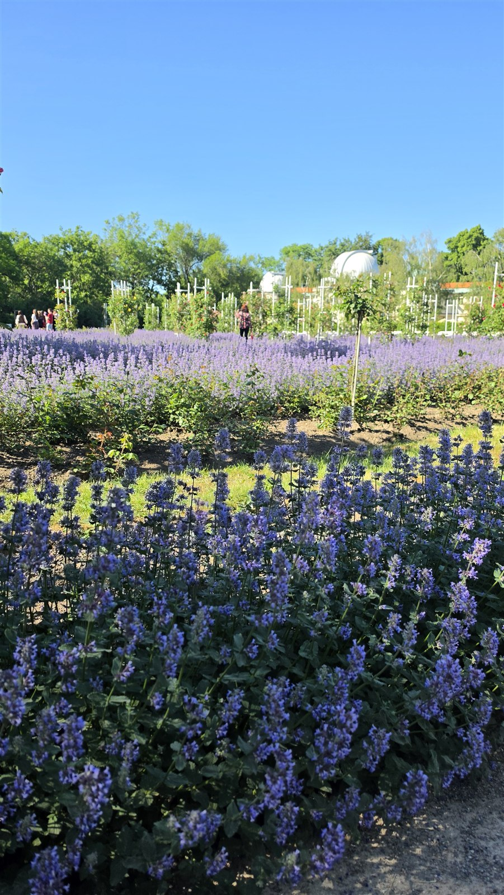<figcaption>오후 4시 47분 페트린 언덕 정원. 라벤더가 줄지어 심겨 있고 뒤로 붉은 지붕 건물이 보입니다. 5월 하순인데 이미 꽃이 올라와 있었습니다.</figcaption></figure>
  <p>페트린은 제가 <b>걸어서</b> 올라갔습니다. 우예즈드 아래에서 찍은 사진이 오후 4시 20분, 정상 정원 사진이 4시 47분. <b>27분</b>입니다.</p>
  <p>걸어 올라간 이유가 있습니다. 당시 페트린 푸니쿨라(케이블카)가 공사로 운휴였습니다. 선택지가 없어서 걸었습니다.</p>
  <p>그런데 이 글을 쓰는 오늘이 마침 그 케이블카가 다시 열리는 날입니다. 프라하 교통공사 공지로 확인하니 <b>2026년 9월 22일부터 운행을 재개</b>하고, 요금은 편도 100코루나, PID 리타치카 앱으로 사면 90코루나입니다.</p>
  <p>24시간권·72시간권 소지자와 프라하 비지터 패스 소지자는 추가 요금 없이 탈 수 있습니다. 다만 모든 PID 승차권이 통하는 건 아니라고 명시돼 있어서, 단권으로 탈 거면 전용 요금을 따로 내야 합니다.</p>
  <p>걸어 올라가 본 사람으로서 말하면, 27분 자체는 힘든 코스가 아닙니다. 계단과 지그재그 흙길이 섞여 있고 중간에 쉴 자리가 있습니다. 다만 한여름 낮에는 그늘이 부족한 구간이 있습니다.</p>
  <figure>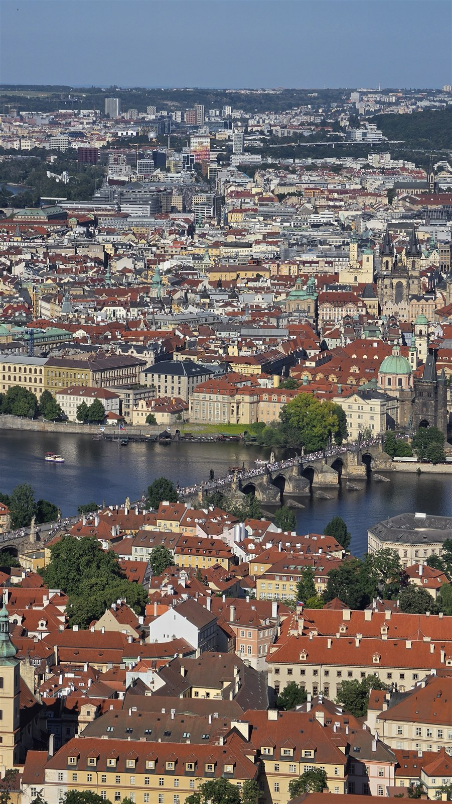<figcaption>오후 5시 35분 페트린에서 본 프라하. 왼쪽에 프라하성, 가운데 블타바 강과 다리들, 오른쪽으로 붉은 지붕이 끝까지 이어집니다.</figcaption></figure>
  <p>페트린의 장점은 <b>높이</b>입니다. 도시 전체가 한 화면에 들어옵니다. 단점은 너무 멀어서 개별 건물이 작게 보인다는 점입니다.</p>
  <p>오후 5시 46분에 페트린 전망탑을 찍었습니다. 철제 구조물인데 실제로 보면 생각보다 가늘고 높습니다. 저는 탑에 올라가지는 않았습니다.</p>
  <figure>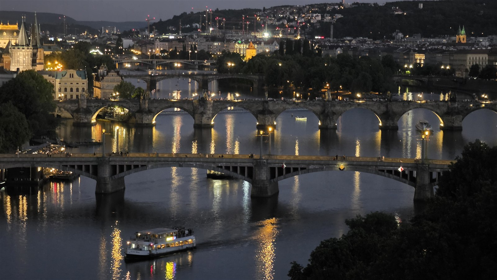<figcaption>밤 9시 39분 레트나. 블타바 강 위 다리들이 조명을 받아 일렬로 늘어서 있습니다. 강물에 조명이 그대로 비칩니다.</figcaption></figure>
  <p>레트나에 오후 6시 27분에 도착해 밤 9시 39분까지 있었습니다. 세 시간 넘게 있었는데, 정확히 말하면 <b>오후 6시 36분부터 8시 51분까지 2시간 15분 동안 사진이 없습니다.</b></p>
  <p>이 공백에 무엇을 했는지는 사진으로 확인되지 않습니다. 식사였을 가능성이 높지만 기록이 없으니 단정하지 않겠습니다.</p>
  <p>레트나의 강점은 <b>다리</b>입니다. 다리 여러 개가 겹쳐 보이는 각도가 여기밖에 없습니다. 야경을 한 장 찍을 거라면 저는 페트린보다 레트나를 고르겠습니다.</p>
  <figure>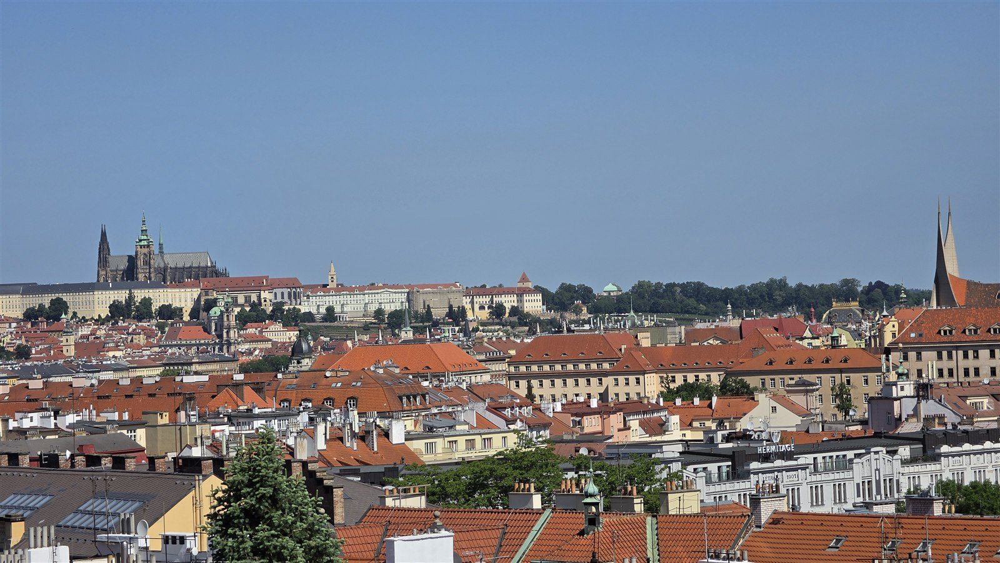<figcaption>5월 26일 오전 10시 31분 비셰흐라드 성벽 위. 붉은 지붕 너머 왼쪽 멀리 프라하성이 보입니다. 이 시간에 성벽 위에 사람이 거의 없었습니다.</figcaption></figure>
  <p>비셰흐라드는 세 곳 중 가장 조용했습니다. 오전 9시 34분부터 11시 12분까지 <b>1시간 38분</b> 있었는데, 사진에 찍힌 사람 수가 다른 두 곳과 비교가 안 됩니다.</p>
  <figure>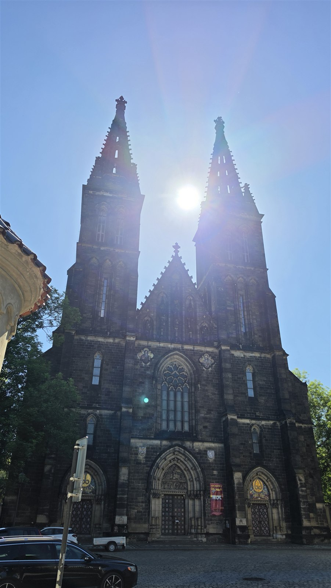<figcaption>오전 9시 46분 성 베드로·성 바울 성당. 쌍둥이 첨탑 사이로 해가 정면에 걸려서 역광이 심했습니다. 아침에 이쪽에서 찍으면 이렇게 됩니다.</figcaption></figure>
  <p>비셰흐라드 야외 구역은 무료입니다. 성벽 위 산책로, 공원, 그리고 묘지까지 돈을 내지 않고 걷습니다. 성당 내부와 로툰다, 지하 카세마트는 별도 요금이 있는데 저는 사진으로 금액을 확인하지 못해 적지 않겠습니다.</p>
  <p>오전 10시 24분 사진에 성 마르틴 로툰다가 있습니다. 작은 원형 예배당인데, 프라하에 남은 로마네스크 건물 중 오래된 것에 속합니다. 밖에서 보면 정말 작습니다.</p>
  <p>세 곳을 비교하면 이렇게 정리됩니다.</p>
  <ul class="checks">
    <li>페트린 — 가장 높고 도시 전체가 보입니다. 걸어 오르면 27분. 케이블카는 2026년 9월 22일 재개통(100코루나, 앱 90코루나)</li>
    <li>레트나 — 다리들이 일렬로 겹치는 각도. 야경 한 장이면 여기. 무료</li>
    <li>비셰흐라드 — 가장 조용하고 프라하성을 정면에서 멀리 봅니다. 야외 무료, 오전이 특히 한산</li>
  </ul>
  <p>전망대 세 곳을 하루에 도는 일정이면 하루 걸음이 상당히 나옵니다. 저는 둘째 날에 성·말라스트라나·페트린·레트나를 이어 붙였는데, 이게 이 일정에서 가장 다리가 아팠던 날이었습니다.</p>
  <div style="text-align:center;margin:30px 0"><a href="https://link.coupang.com/a/g5qtArxUf6" target="_blank" rel="nofollow sponsored noopener" style="display:inline-block;padding:15px 28px;background:#E34948;color:#fff;font-weight:700;font-size:18px;text-decoration:none;border-radius:8px"><b>▶ 장시간 보행용 쿠션 깔창 보러 가기</b></a></div>
  <h2>콘서트 호객 가격판 — 유로로 내면 손해였습니다</h2>
  <figure>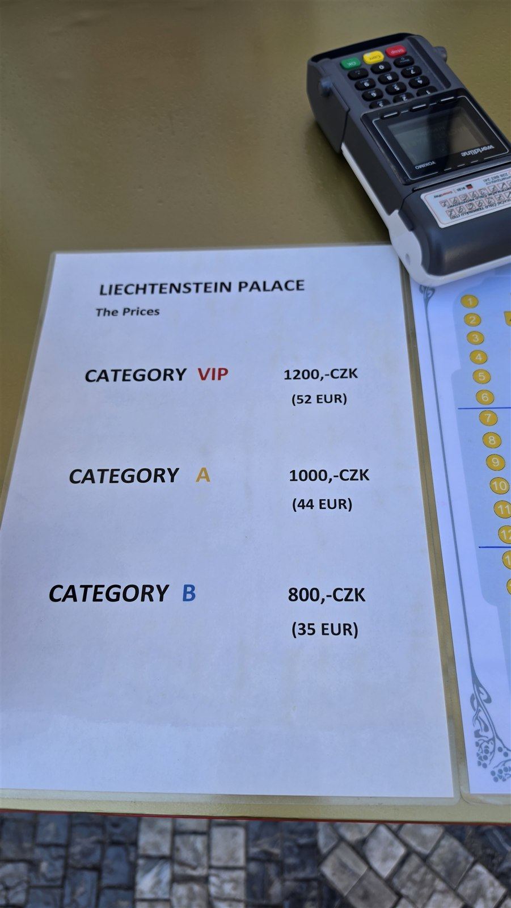<figcaption>오후 1시 41분, 리히텐슈타인 궁 앞 콘서트 판매 테이블. VIP 1200코루나(52유로), A 1000코루나(44유로), B 800코루나(35유로). 오른쪽에 카드 단말기가 놓여 있습니다.</figcaption></figure>
  <p>프라하 구시가와 말라스트라나를 걸으면 클래식 콘서트 표를 파는 사람을 자주 만납니다. 저는 사기로 결정하지는 않았지만 가격판을 찍어 뒀습니다.</p>
  <p>이 사진에서 눈에 걸린 건 금액이 아니라 <b>유로 환산</b>입니다. 1200코루나를 52유로, 1000코루나를 44유로, 800코루나를 35유로로 적어 놓았습니다.</p>
  <p>역산하면 1유로를 약 23코루나로 계산한 셈입니다. 2026년 9월 22일 시장 환율은 1유로에 약 24.3코루나입니다. 즉 <b>유로로 내면 코루나로 내는 것보다 비싸게 계산됩니다.</b></p>
  <p>금액으로는 크지 않습니다. 800코루나짜리를 35유로로 내면 코루나 기준으로 850코루나쯤 내는 셈이니 50코루나 차이입니다. 그래도 관광지에서 유로 병기 가격을 볼 때 이 계산을 한 번 해보면 손해를 줄일 수 있습니다.</p>
  <p>참고로 800코루나는 원화로 약 51,800원입니다. 저는 결국 공연을 보지 않았는데, 첫날 밤 카를교에 두 시간을 쓴 게 더 기억에 남아서 후회하지는 않습니다.</p>
  <h2>마지막 날 — 댄싱하우스, 레논벽, 그리고 구시가광장</h2>
  <figure>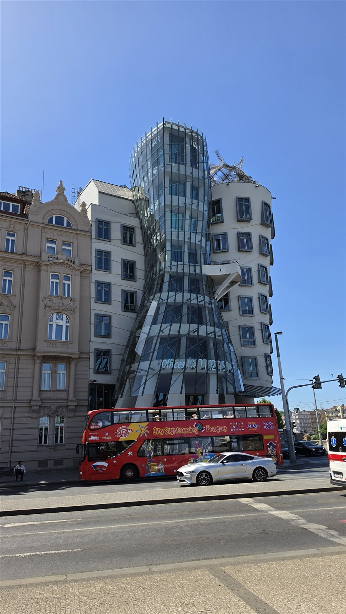<figcaption>오전 11시 27분 댄싱하우스. 유리 건물이 실제로 허리가 꺾인 것처럼 휘어 있습니다. 바로 앞 도로에 빨간 이층 관광버스가 서 있었습니다.</figcaption></figure>
  <p>댄싱하우스는 사진으로 봤을 때와 실제가 조금 다릅니다. 사진에서는 독립된 건물처럼 보이는데, 실제로는 평범한 건물 사이에 끼어 있습니다. 그래서 각도를 잡기가 좁습니다.</p>
  <p>길 건너 강변에서 보는 편이 낫습니다. 오전 11시 36분 사진이 그 자리에서 찍은 것인데, 강과 페트린 언덕이 같이 들어옵니다.</p>
  <figure>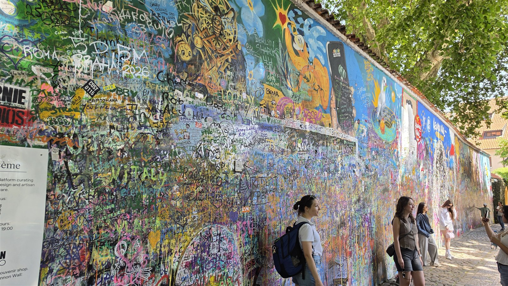<figcaption>오후 12시 43분 레논벽. 벽 전체가 색으로 덮여 있고, 사진 오른쪽으로 사람들이 벽을 따라 서 있습니다.</figcaption></figure>
  <p>레논벽은 예상보다 <b>짧았습니다.</b> 사진으로 볼 때는 긴 벽 같은데 실제로는 골목 한쪽 면입니다. 걸어서 지나가면 1~2분이고, 사진을 찍으려면 사람이 빠지는 순간을 기다려야 합니다.</p>
  <p>오후 12시 48분에 찍은 사진에 벽 한가운데 'LENNON WALL'과 'FREEDOM ENERGY'가 크게 적혀 있습니다. 벽 그림은 계속 덧칠되니까 제가 본 것과 지금 모습은 다를 겁니다.</p>
  <figure>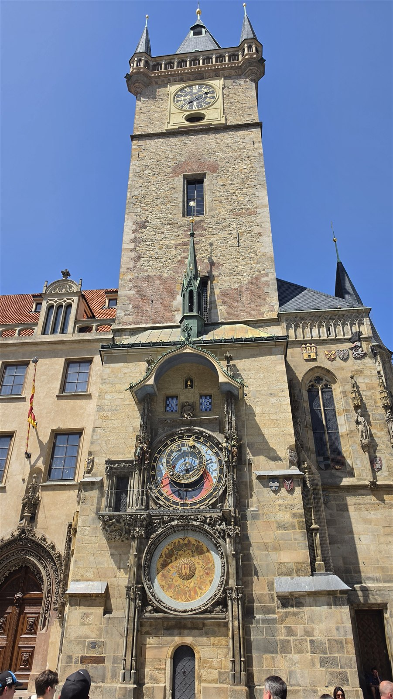<figcaption>오후 1시 42분 천문시계. 시계판 두 개가 위아래로 붙어 있고, 위쪽이 천문시계, 아래쪽이 달력판입니다.</figcaption></figure>
  <p>천문시계 앞은 정시마다 사람이 몰립니다. 저는 오후 1시 38분과 1시 42분에 찍었으니 정시 인형 퍼레이드를 본 시간대는 아닙니다.</p>
  <p>올라가 보려면 구시가 시청탑 입장료가 필요합니다. 2026년 9월 22일 확인 기준 성인 <b>350코루나</b>(약 22,700원), 할인 230, 16~26세 280, 가족 750코루나입니다. 계단 대신 유리 엘리베이터를 쓰면 100코루나가 더 붙습니다.</p>
  <figure>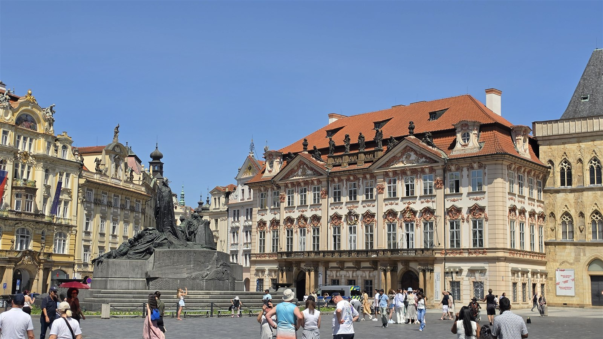<figcaption>오후 1시 43분 구시가광장. 왼쪽에 얀 후스 기념비, 가운데 붉은 지붕의 킨스키 궁, 광장 전체에 사람이 퍼져 있습니다.</figcaption></figure>
  <p>구시가광장은 좋았는데 오래 머물 이유는 못 찾았습니다. 사진 시각으로 1시 33분부터 1시 43분까지 10분입니다. 한여름 낮에 그늘이 거의 없어서 서 있기가 편하지 않았습니다.</p>
  <p>차라리 오후 1시 11분부터 1시 20분까지 들어가 있던 교회 내부가 인상에 남았습니다. 카를교를 건너자마자 오른쪽에 있는 성당인데, 밖의 열기와 안이 완전히 달랐습니다.</p>
  <figure>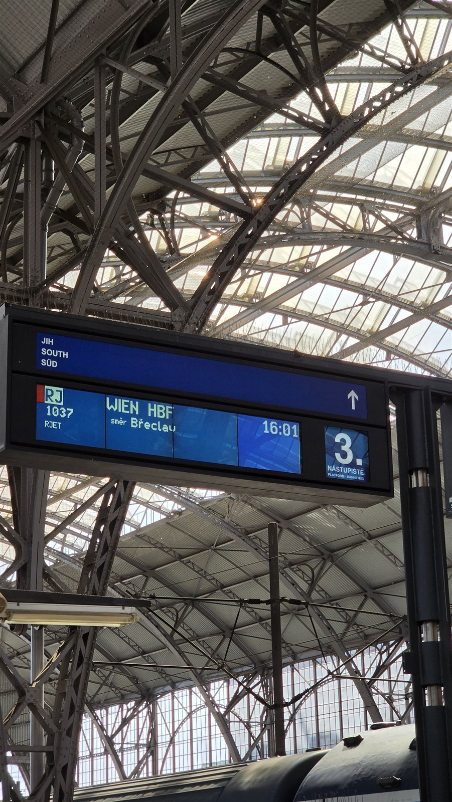<figcaption>오후 3시 57분 프라하 중앙역 3번 승강장. 철골 지붕 아래 전광판에 열차 정보가 떠 있습니다. 이게 프라하에서 찍은 마지막 사진입니다.</figcaption></figure>
  <p>중앙역에 도착해서 찍은 오후 3시 40분 사진이 이 역의 진짜 볼거리입니다. 옛 역사 부분 돔 천장인데, 아르누보 장식이 그대로 남아 있습니다. 기차를 안 타도 한 번 들어가 볼 만합니다.</p>
  <h2>교통과 요금 — 2026년에 오른 값 기준</h2>
  <p>프라하 교통권은 시간제입니다. 2026년 1월 1일부터 올랐고, 2026년 9월 22일 확인 기준으로 이렇습니다.</p>
  <ul class="checks">
    <li>30분권 — 종이 39코루나 / PID 리타치카 앱 36코루나 (약 2,500원)</li>
    <li>90분권 — 종이 50코루나 / 앱 46코루나 (약 3,200원)</li>
    <li>24시간권 — 종이 150코루나 / 앱 140코루나 (약 9,700원)</li>
    <li>72시간권 — 종이 350코루나 / 앱 340코루나 (약 22,700원)</li>
    <li>공항 직행버스(AE, 중앙역↔공항) — 200코루나, 6~15세 100코루나 (약 13,000원)</li>
  </ul>
  <p>앱으로 사면 종이보다 몇 코루나 쌉니다. 2박 3일 일정이면 72시간권이 계산상 유리해 보이는데, 실제로는 걸어 다니는 비중에 따라 갈립니다.</p>
  <p>저는 사진에 교통수단이 거의 안 찍혔습니다. 트램 사진 몇 장이 있지만 제가 탄 것인지 지나가는 것을 찍은 것인지 구분이 안 됩니다. 그래서 어떤 표를 썼는지는 쓰지 않겠습니다.</p>
  <p>공항에서 시내로 갈 때는 지하철 A선과 119번 버스, 또는 B선과 100번 버스를 조합하는 방법이 있습니다. 중앙역까지 한 번에 가는 직행버스는 별도 요금 200코루나입니다.</p>
  <div style="text-align:center;margin:30px 0"><a href="https://link.coupang.com/a/g5qs9wUmXI" target="_blank" rel="nofollow sponsored noopener" style="display:inline-block;padding:15px 28px;background:#E34948;color:#fff;font-weight:700;font-size:18px;text-decoration:none;border-radius:8px"><b>▶ 유럽 여행용 멀티 어댑터 보러 가기</b></a></div>
  <p>체코 콘센트는 우리와 모양이 같은 C형이라 어댑터 없이 대부분 꽂힙니다. USB 포트가 여럿 달린 멀티 어댑터가 하나 있으면 호텔 콘센트가 부족할 때 편합니다.</p>
  <h2>가기 전에 알아두면 좋은 것</h2>
  <p>아래는 제가 직접 겪은 것과 발행 시점에 확인한 공개 정보를 구분해서 적었습니다.</p>
  <ul class="checks">
    <li>성 비투스 대성당은 <b>일요일에 정오(12:00)에 엽니다.</b> 저는 월요일 오전에 갔으니 해당되지 않았는데, 일요일 오전에 성을 넣는 일정이면 대성당만 통째로 빠집니다 (공개 정보)</li>
    <li>프라하성 티켓은 <b>이틀 연속 유효</b>합니다. 하루에 다 못 봐도 다음 날 이어서 볼 수 있습니다 (티켓 실물로 확인)</li>
    <li>성 내부는 오전 9시 개장입니다. 9시 직전에 들어가면 제2중정이 거의 비어 있습니다 (제 사진 09:30 vs 13:00 비교)</li>
    <li>페트린 푸니쿨라는 2024년부터 공사로 멈춰 있었고 <b>2026년 9월 22일 재개통</b>했습니다. 저는 운휴 기간에 가서 걸어 올랐습니다 (공개 정보 + 제 경험)</li>
    <li>5월 하순 프라하는 밤 9시가 넘어야 어두워집니다. 야경 사진을 노리면 일정이 밤 10시까지 길어집니다 (제 사진 시각으로 확인)</li>
    <li>관광지에서 코루나·유로 병기 가격을 보면 유로 환산율을 한 번 계산해 보세요. 제가 본 판은 1유로를 약 23코루나로 잡아 두었습니다 (사진으로 확인)</li>
  </ul>
  <p>소지품은 조금 신경 쓰는 편이 낫습니다. 제 사진만 봐도 카를교와 구시가광장은 사람이 몸을 스칠 정도로 붙어 다니는 구간입니다. 가방을 앞으로 메는 게 기본입니다.</p>
  <div style="text-align:center;margin:30px 0"><a href="https://link.coupang.com/a/g5qtYgQFyK" target="_blank" rel="nofollow sponsored noopener" style="display:inline-block;padding:15px 28px;background:#E34948;color:#fff;font-weight:700;font-size:18px;text-decoration:none;border-radius:8px"><b>▶ 장거리 비행용 목베개 보러 가기</b></a></div>
  <h2>이런 분께 맞고, 이런 분께는 안 맞습니다</h2>
  <p>맞는 경우 — 하루 10km 넘게 걷는 게 괜찮은 분, 건물 안을 오래 보는 걸 좋아하는 분, 저녁 시간대를 일정의 중심에 놓을 수 있는 분.</p>
  <p>안 맞는 경우 — 계단과 오르막이 부담스러운 분, 하루에 명소 여러 곳을 찍고 넘어가는 방식을 좋아하는 분. 프라하는 언덕과 계단이 많고, 제 이틀째 일정은 성에서 페트린, 다시 레트나로 올라갔다 내려오는 코스였습니다.</p>
  <p>그리고 솔직하게 덧붙이면, 50시간은 짧았습니다. 성에 반나절, 전망대에 반나절을 쓰면 나머지가 거의 안 남습니다. 저는 유대인 지구와 박물관을 통째로 못 봤습니다.</p>
  <h2>자주 묻는 질문</h2>
  <p><b>프라하는 며칠이면 충분한가요?</b></p>
  <p>제 경우 50시간(2박 3일)으로는 주요 지점만 겨우 돌았습니다. 성 내부와 전망대를 다 볼 생각이면 3박 이상이 편합니다. 유대인 지구나 박물관을 넣으려면 더 필요합니다.</p>
  <p><b>프라하성은 얼마나 걸리나요?</b></p>
  <p>저는 4시간 45분 걸렸습니다. 대성당 내부 1시간 18분, 구왕궁과 황금소로에 1시간 반가량입니다. 밖에서 사진만 찍고 지나가면 한 시간도 가능하지만, 450코루나 티켓을 쓸 거라면 최소 3시간은 잡는 편이 낫습니다.</p>
  <p><b>카를교는 언제 가는 게 좋나요?</b></p>
  <p>저는 저녁 8시에서 밤 10시 사이가 좋았습니다. 노을과 조명, 그리고 사람이 빠지는 시간이 그 안에 다 들어 있습니다. 낮에는 사람에 밀려서 멈춰 서기 어렵습니다.</p>
  <p><b>전망대는 어디가 제일 좋나요?</b></p>
  <p>목적에 따라 갈립니다. 도시 전체를 한 장에 담으려면 페트린, 다리가 겹친 야경이면 레트나, 조용히 앉아 있고 싶으면 비셰흐라드입니다. 비셰흐라드 야외는 무료입니다.</p>
  <p><b>교통권은 뭘 사야 하나요?</b></p>
  <p>2박 3일이면 72시간권(종이 350코루나, 앱 340코루나)이 계산상 가장 단순합니다. 다만 프라하 구시가는 걸어서 대부분 이어지니, 걸을 생각이라면 필요할 때 30분권·90분권을 사는 게 쌀 수 있습니다.</p>
  <h2>정리하면</h2>
  <p>프라하 2박 3일에서 제가 얻은 결론은 하나입니다. <b>같은 장소를 시간대만 바꿔서 두 번 가는 게, 새 장소를 한 곳 더 넣는 것보다 낫습니다.</b></p>
  <p>카를교 2시간 3분과 6분의 차이가 그걸 그대로 보여줍니다. 낮에 이미 건넌 다리를 저녁에 또 건넌 게 이 일정에서 가장 잘한 선택이었습니다.</p>
  <p>사진을 정리하면서 알게 된 것도 있습니다. 제가 어디서 오래 머물렀는지는 기억보다 사진 시각이 정확합니다. 기억으로는 성이 제일 길었을 것 같았는데, 강변과 다리에서 보낸 시간이 그만큼 됐습니다.</p>
  <p>다음 글에서는 프라하에서 빈으로 넘어간 구간(레기오젯 열차)을 정리하겠습니다.</p>
  <p style="font-size:12px;color:#999;line-height:1.6;margin-top:36px">방문 날짜와 시각은 2026년 5월 24~26일 여행 중 찍은 사진 258장의 촬영 시각(중부유럽 현지 시각)으로 확인했습니다. 요금·운영 시간은 2026년 9월 22일에 확인한 공개 정보이며 바뀔 수 있습니다. 방문 전 공식 홈페이지에서 다시 확인하세요. 원화 환산은 1코루나 64.78원 기준의 대략치입니다. 식사·숙소·개인 지출은 사진으로 확인되지 않아 적지 않았습니다. 프라하성 요금은 hrad.cz 공식 요금 안내, 대중교통 요금은 프라하 교통공사(PID/DPP)의 2026년 요금표, 페트린 푸니쿨라 재개통과 요금은 PID 공지, 구시가 시청탑 요금은 공식 판매 정보를 참고했습니다. 세탁소 요금과 콘서트 가격, 프라하성 티켓 금액은 제가 현장에서 찍은 사진에 적힌 값입니다.</p>
</main>

<footer class="foot">
  <div class="wrap"><p>나의 투자 그리고 행복한 여행 · 투자 판단의 참고 자료일 뿐, 매수·매도를 권유하지 않습니다.</p></div>
</footer>
